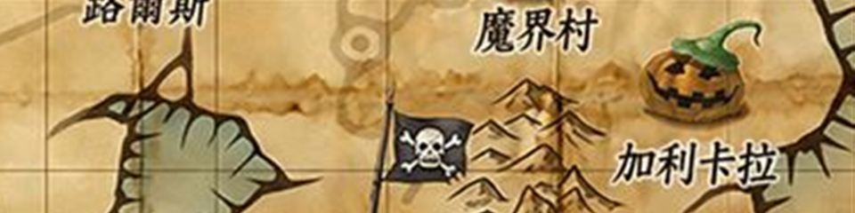
梅杜莎
我們伺服器實際的怪物設定（不是日版 wiki 的資料）。
能力值
| 項目 | 本伺服器 | 日版 wiki |
| 等級 | 99 | 99 |
| HP | 190000～200000 | 48,000 |
| AC | -5 | 15 |
| MC | 10 | 50 |
| AAR | 40 | 60 |
| SAR | 45 | 40 |
| STR | 110 | 43 |
| DEX | 30 | 63 |
| INT | 25 | 53 |
| WIS | 25 | 163 |
| CON | 150 | 63 |
| 經驗值 | 1300000 | 1476 |
| 名聲值 | 4000 | 148 |
| 金錢 | 65000 | 324 |
| 攻擊屬性 | 隨機 | 隨機 |
| 防禦屬性 | 隨機 | 隨機 |
出現地圖
| 地圖 | 數量 | 出現位置 |
| 童話夢魘2 | 2～3 | 範圍 (5,5)-(118,126) |
掉落物品
| 道具 | 基本機率 |
| 戰士耳環 | 0.15% |
| 琉璃石 | 0.4% |
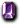 紫水晶 | 0.4% |
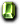 綠寶石 | 0.4% |
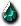 血石 | 0.4% |
 梅汀比希特里 梅汀比希特里 | 0.05% |
 強力CHeal符文附魔 強力CHeal符文附魔 | 0.1% |
| 戴莫尼翁之耳環 | 0.05% |
 暗影護腕 暗影護腕 | 0.05% |
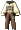 莉希涅之緊身衣 | 0.05% |
 幻影的莉希涅之指虎 幻影的莉希涅之指虎 | 0.05% |
| 強力INT符文附魔 | 0.1% |
| 終極寶珠-柒式 | 0.05% |
| 極光之甲 | 0.45% |
| 土耳其石 | 1.2% |
 白麻石 白麻石 | 1.2% |
| 翡翠 | 1.2% |
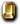 瑪瑙 | 1.2% |
 橄欖石 橄欖石 | 1.2% |
| 玉髓石 | 1.2% |
| 黑珍珠 | 1.2% |
| 紫水晶 | 1.2% |
| 琉璃石 | 1.2% |
 玫瑰石 玫瑰石 | 1.2% |
 祖母綠 祖母綠 | 1.2% |
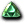 紅鋯石 | 1.2% |
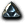 血石 | 1.2% |
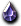 白乳石 | 1.2% |
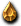 黃寶石 | 1.2% |
| 綠寶石 | 1.2% |
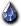 藍寶石 | 1.2% |
 紅寶石 紅寶石 | 1.2% |
 鑽石 鑽石 | 1.2% |
基本機率再乘上伺服器的掉寶倍率；「隨機一件」是從一組道具裡抽一件。